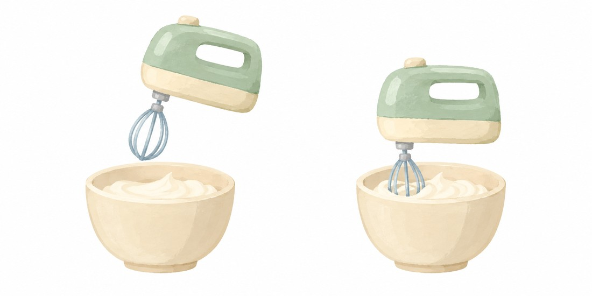
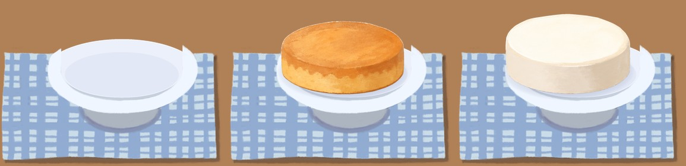

Food Truck Cafe
19 November. 2026.11.18 is live on the App Store; test build 2026.11.19 (0) in TestFlight.
1Next
You
Test build 2026.11.20 (2): in TestFlight since 12:56 (the approved stand, 2-second thinking). Build (1) of 12:41 had my wrong cake stand; skip it.
Current: ChatGPT's mixer set; the cake stages on your approved stand.
Release 2026.11.20 is still waiting for Apple's review.
Me
A locked "Dining table" card (25 stars) in the star shop; its cookie is being drawn by Gemini. Tomorrow morning: App Store Connect's 19th.
2Q&A
What are "Header" and "Search Results" on the release page? They are empty for our game.
- They are new, optional slots from Apple ("creative assets", shown from iOS 27): a picture or short looping video at the very top of our store page (Header), and a picture shown beside the game in search (Search Results).
- Empty is fine: the page looks as it does now, and search keeps showing our video and screenshots. Nothing is missing from the release.
- They are a chance to look better: one clear picture of the truck and the table, no prices, readable small. Apple gives templates with safe areas. They go through review like screenshots.
The sale price of each item
- Chapter 1: coffee $10, bread $15, apple $20, juice $20, cookies $30, strawberry cake $35 a slice, choux $35.
- Chapter 2: coconut $30, ice cream $15 per scoop (a three-scoop glass is $45).
- Plus a tip: price × seconds left on the order × 10 % (some customers tip more). A $30 order served with 6 seconds left pays $18 in tips.
- A replayed day pays only part of this (unchanged).
How long each kitchen item takes
- Ovens: cookies 6 s, bread 8 s, choux 10 s, cake 15 s.
- Apples (chapter 1) and coconuts (chapter 2): the tree or palm grows them back 8 s after the last one is picked.
- Blender (ice cream refill): 5 s (four flavours of 1.1 s, then 0.6 s settling).
- Waffle machine: about 2.4 s (1.1 s of steam, then the lid opens and the bowls come out).
- Coffee bags and juice: no wait, a tap refills at once.
- With the Kitchen upgrade (15 stars) every wait above is a quarter shorter: cookies 4.5 s, bread 6 s, choux 7.5 s, cake 11.3 s, apples and coconuts 6 s, blender 3.9 s, waffles 2.1 s.
3Current
Test build 2026.11.20 (2) has the approved stand and the 2-second thinking time; placeholders where pictures are not ready.
Mixer set, drawn by ChatGPT from your description (no Gemini picture given; our kitchen pieces as the style reference).

- On your tick I cut both states for the game and swap them while it runs; the whisk is replaced by our own whisk's pixels.
The cake stages on the stand you approved. I had swapped in my cut of the kitchen painting; now every stage stands on the table cake's own stand and napkin (your approved empty holder), and the finished cake is the table's cake.

4MVP
Next release: the kitchen remodel and the small fixes.
- In the test build: the kitchen flow for choux and cake (plate on the kitchen table, mixer, fruit board, flight to the table); chapter 2 after day 9 with the map scene; thinking dots; shop locks and NEW on tabs; taller hen; aligned shop; the day card opening on the map; pause stops the kitchen; the "Ready to go?" card; the extra cup's words.
- Placeholders in it: the whisk as the mixer, the fruit board's hop as the cutting, my plain and creamed choux, my empty cake stand.
- Still to make: the mixer picture (your pick in Current), the real choux stages, the cutting animation, the test robot learning the new kitchen taps.
5Backlog
Nothing open.
6Analysis
Nothing open.
7Marketing
Nothing open.